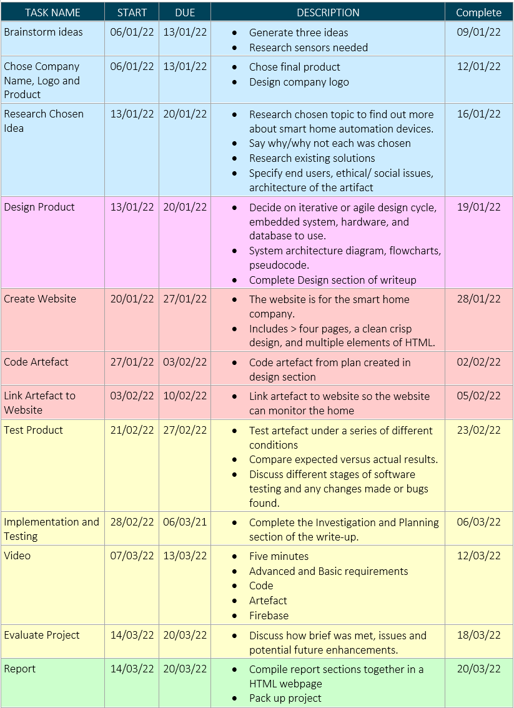

During the project development, I decided to use the built-in Micro:bit speaker to alert the users of the rainfall. I felt the inclusion of this audio alarm may assist visually impaired users. Due to the software development approach I took, I was able to iterate back to the design process where it was simple to alter my design to include this feature.
In the development phase I had issues reading the data from the Micro:bit to Firebase. I discovered that I was running the code using the wrong interpreter as I was getting an error message saying there was an unexpected echo. I was able to solve this problem by online research of using the Thonny IDE with a Micro:bit.
Another issue I had during the project was regarding my timelines. During the allotted time for the project, I was sitting my Leaving Cert Mock Exams so I was forced to adjust my deadlines in order to have time to study.
The operation of the system is very simple. A sensing pad on the rain sensor acts as a variable resistor whose resistance varies according to the amount of water on the surface. The sensor produces an output voltage according to the resistance, which by measuring we can determine if it is raining or not.
Using combined agile and waterfall methodologies, previously outlined, implementation and testing of my project is detailed in following table:
For my system testing I compared my device to the brief and requirements I had scoped to ensure I had included all customer specifications. I tested my device in-house to ensure all elements of the system worked. Once I ensured there were no bugs, I invited one of my peers to carry out beta testing in their home, as the conditions of these tests are more typical to real-life scenarios.
I did not do any functional testing of the Micro:bit system as it did not include many different functions. The alarm was included in the programming of the Micro:bit because of the built-in speaker so there was no need to test it as a separate function.
I did test the separate functions of my algorithms when transferring the data to the Firebase database. I first ensured that the program was able to send information to the database. I then tested the function that read in and cleaned the rain level data. I had to ensure that the data was being cleaned so the value could be converted to an integer. Subsequently I was able to combine the functions so the rain level data could be sent to the database.
I designed my test cases to mirror several potential real-life scenarios. I researched the average amount of rainfall daily in Ireland.[4] I discovered:
I also tested the value of the rain sensor if an object was to blow onto the sensor such as a leaf. I wanted to ensure that if an object fell onto the sensor a false alarm would not be triggered.
I used a syringe to accurately pour the water onto the sensor. This allowed me to add the water dropwise which would mirror the real-life rainfall.
All tests I performed passed so I did not have to alter any of my code. Beta testing also produced the same results. However, I observed that once there was rain on the sensor, the alarm did not turn off unless the water was wiped away. To solve this issue, I placed the rain sensor at a slant so the water could run off and the alarm would turn off whenever the rainfall stopped. I repeated all previous test cases with the sensor at a slant to ensure results remained as expected.